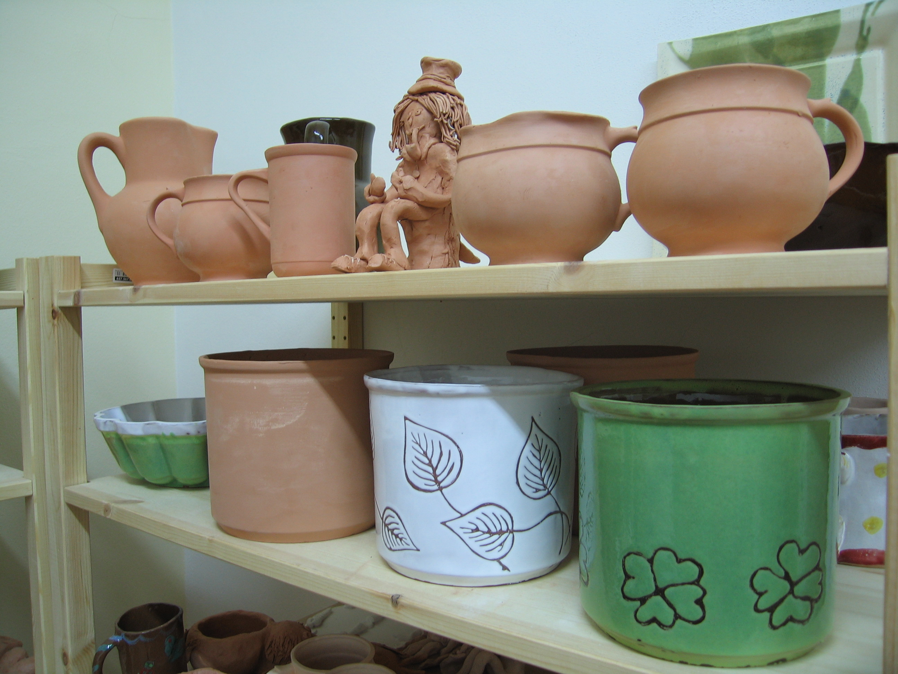
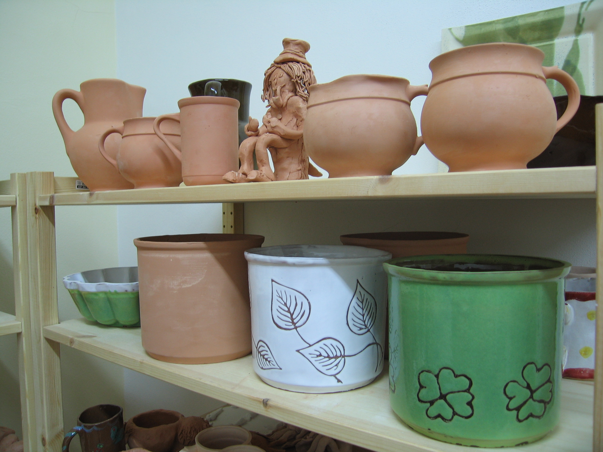

Aktuality
News
- Do napnění maximální kapacity kurzu aktuálně zbývá 5 volných míst
- Kvůli covid-19 jsou lekce na období jaro/léto 2020 pozastaveny
- Náhradní termíny budou domluveny individuálně se současnými účastníky kurzů
- Lekce keramiky na období podzim/zima 2020 začínají 17.9 2020
- There are currently 5 free spots in adult pottery classes
- Bacause of covid-19, lessons for the spring/summer 2020 have been temporarily canceled
- Replacement lessons time and date will be planned individually with current pupils
- Pottery classes for the autumn/winter of 2020 start on 17th September


 
